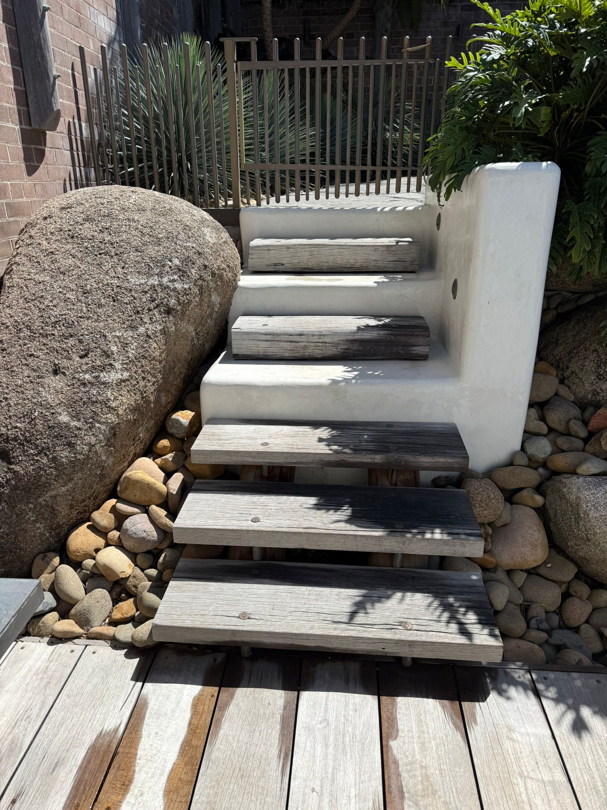

Conception et Création de Jardin
Henri Bonenfant conçoit des espaces verts personnalisés à Tournai qui reflètent vos envies et s'adaptent à votre environnement. De la conception à la réalisation, il donne vie à votre projet de jardin, de A à Z.